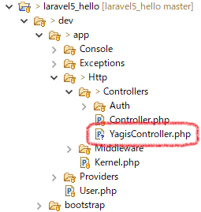
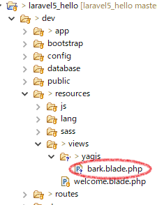
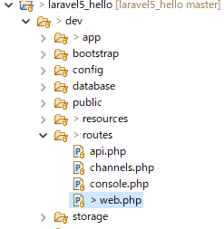
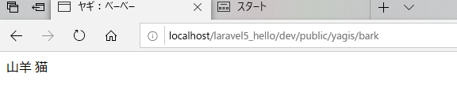

Laravel5プロジェクトをComposerから立ち上げ
Laravel5.7はPHP7.1.3以上を必要とするので注意手順
-
php.iniをテキストエディタで開き、「;」を外して「extension=php_intl.dll」を有効にする。
-
プロジェクトを作成する任意にディレクトリへ移動
$ cd git/laravel5_hello
-
composerのコマンドでLaravel5をインストールする。
$ composer create-project "laravel/laravel=5.7.*" dev
インストールには数分かかる。
devとなっている箇所は任意。インストール先ディレクトリの名前になる。
-
以上でインストール完了
ブラウザに下記URLを指定して、Laravelのスタート画面が表示されれば成功
http://localhost/laravel5_hello/dev/public/

追記：
日本語設定も必要。 日本向け設定 | タイムゾーン（timezone） | ロケール
artisanコマンドを使う
プロジェクトのディレクトリに移動し、phpコマンドを通してartisanコマンドを使う。$ cd git/laravel5_hello/dev $ php artisan list参考サイト：Laravel artisanコマンドメモ
基本：コントローラとビューの作成
手順
-
コントローラを作成する。
$php artisan make:controller YagisController
 -
コントローラからデータを渡しつつビューを呼び出す。
<?php namespace App¥Http¥Controllers; use Illuminate¥Http¥Request; class YagisController extends Controller { public function bark() { $data = ['neko'=>'猫', 'yagi'=>'山羊']; return view('yagis.bark', compact('data')); } } -
ビューを作成する。→ resources/views/yagis/bark.blade.php
<!doctype html> <html lang="{{ str_replace('_', '-', app()->getLocale()) }}"> <head> <meta charset="utf-8"> <meta name="viewport" content="width=device-width, initial-scale=1"> <title>ヤギ：べーべー</title> </head> <body> <div> {{$data['yagi']}} <?php echo $data['neko'] ?> </div> </body> </html> -
web.phpにルートを記述する。

routes/web.phpRoute::get('yagis/bark', 'YagisController@bark'); -
ブラウザから「http://localhost/laravel5_hello/dev/public/yagis/bark」を開く

以上。
DB接続 | MySQL
Laravel5.7でのDB接続の設定は「.env」あるいは、「config/database.php」で行う。database.phpの設定は、envメソッドを通して設定されている。
つまり「.env」の設定をdatabase.phpが利用しているようなので、実質「.env」にだけDB接続の設定を記述すればよい。
envメソッドを使わないならdatabase.phpに直接DB接続設定をすることも可能。
「.env」はappフォルダと同列のディレクトリに存在する。(ルート/.env)
ローカル側の.env設定例
DB_CONNECTION=mysql
DB_HOST=127.0.0.1
DB_PORT=3306
DB_DATABASE=animal_park【DB名】
DB_USERNAME=root
DB_PASSWORD=【パスワード】
DB_CONNECTION=mysql
DB_HOST=mysqlXXX.db.sakura.ne.jp
DB_PORT=3306
DB_DATABASE=【ユーザー名】_animal_park
DB_USERNAME=【ユーザー名】
DB_PASSWORD=【パスワード】
config/database.php
envを利用して「.env」の値を設定している。そのためdatabase.phpはデフォルトのままでも構わない。
'connections' => [
'sqlite' => [
'driver' => 'sqlite',
'database' => env('DB_DATABASE', database_path('database.sqlite')),
'prefix' => '',
'foreign_key_constraints' => env('DB_FOREIGN_KEYS', true),
],
'mysql' => [
'driver' => 'mysql',
'host' => env('DB_HOST', '127.0.0.1'), // ← envメソッドを通して設定されている
'port' => env('DB_PORT', '3306'),
'database' => env('DB_DATABASE', 'forge'),
'username' => env('DB_USERNAME', 'forge'),
'password' => env('DB_PASSWORD', ''),
'unix_socket' => env('DB_SOCKET', ''),
'charset' => 'utf8mb4',
'collation' => 'utf8mb4_unicode_ci',
'prefix' => '',
'prefix_indexes' => true,
'strict' => true,
'engine' => null,
],
コントローラ側での使用例
namespace App¥Http¥Controllers; use Illuminate¥Http¥Request; use Illuminate¥Support¥Facades¥DB; class YagisController extends Controller { public function bark() { //$data2 = DB::select('select * from yagis where id=2'); // $data2 = DB::connection('mysql')->select('select * from yagis where id=2'); // ← DB接続設定を指定する場合 $data2 = ¥DB::select('select * from yagis where id=2'); // Laravel7の場合、「¥」を付ける必要がある。 var_dump($data2); return view('yagis.bark', compact('data2')); } }
.envファイルでローカルDB接続設定を記述しなかった場合、以下のエラーが生じる。
SQLSTATE[HY000] [1045] Access denied for user 'homestead'@'localhost'
さくらレンタルサーバーにてwelcomeページ以外の404エラー | 対策？
Laravel5.7で作成したサンプルをさくらサーバー（スタンダードプラン）にアップしたところ、 welcomeページ以外の404エラーになった。「public/.htaccess」の先頭に下記のコードを入れた時くらいから治るようになった。
<Directory /home/(ユーザー）/www/laravel5_hello/dev/public>
Options Indexes FollowSymLinks
AllowOverride All
Require all granted
</Directory>
その後、404エラーを再現することができず原因は不明のまま。
思い当たる節としては、さくらサーバー側がPHP5.6だとは知らずLaravel5.7を動かそうとして四苦八苦していた影響が原因なのかもしれない。
ちなみにさくらサーバーをPHP7.2に変更したらLaravel5.7のサンプルは動くようになった。